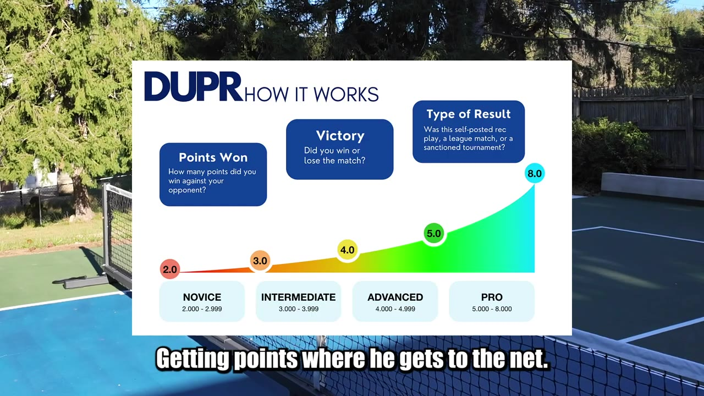
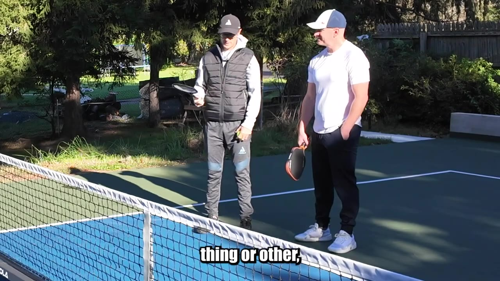
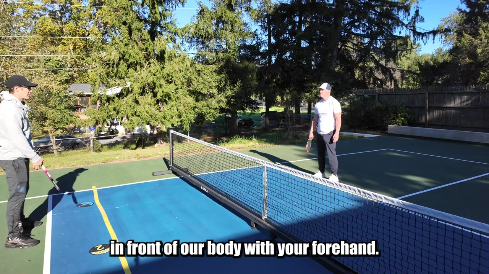
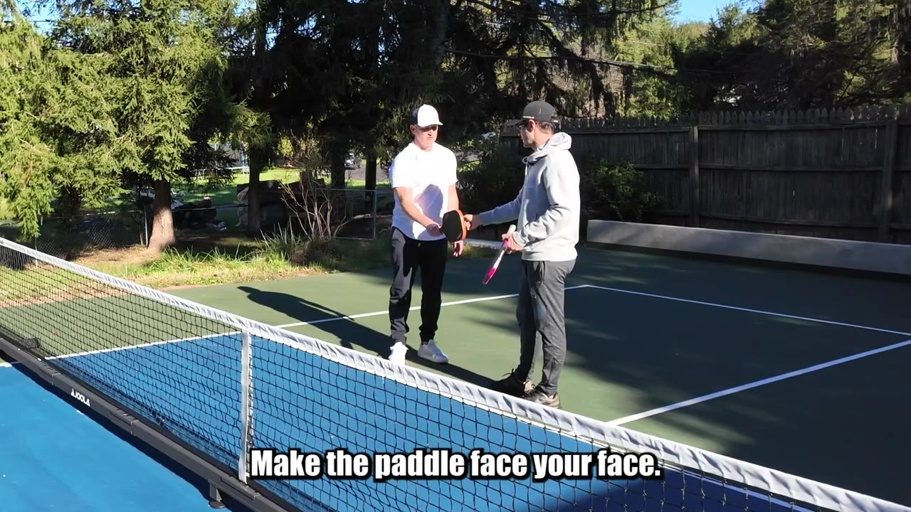
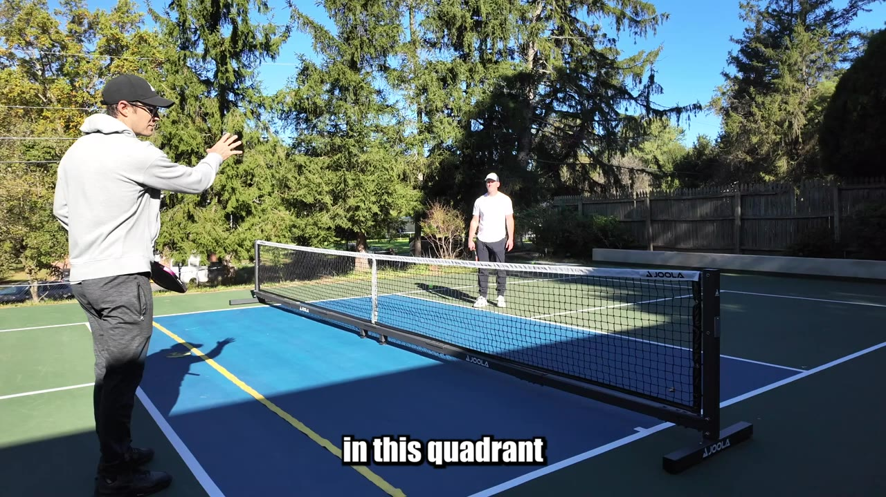

Bobby plays around 4.0 but struggles to hold position at the kitchen. His instructor walks him through apex contact, forward站位, and why taking dinks out of the air — not letting them bounce — is the fastest way to win at the net.
Runtime: 35 minVideo published: October 19, 202431.7K views when summarized
Hit every dink at the ball's apex, not on the descent
Step in and catch dinks early to stay at the kitchen line
Use paddle-face tracking (outer edge) to handle both dinks and hard drives
Condense middle on crosscourt dinks instead of drifting to the sideline
Backhand dink starts with paddle head down and a bent wrist — not a flick
01 · The starting line
Bobby's DUPR chart

Bobby sits in the 4.0 range — can get to the net, but can't hold it there. The DUPR chart maps it: from intermediate to advanced, the jump is positional, not just swing speed.00:00:38
Player profileBobby has been playing pickleball for a year and a half, in the 4.0 rating range, and gets points where he reaches the kitchen — but sometimes can't maintain position up there and win the points.
02 · Catch at the apex
The H-bounce drill
The ball's journey: short hop → apex (highest point) → descent. Hitting at the apex gives you the flattest trajectory and the most court to aim at.
Most dink mistakes come from hitting on the descent — you've lost height and the ball sits up. The fix is learning to get the paddle head below the ball at its highest point. The instructor introduces a scooping tool to drill this feel: toss the ball up, catch it under it on the way up, then replicate that motion with the paddle.
Get all the way up to the kitchen. Get the paddle head below the level of the ball.— Instructor

The scooping tool drills the under-the-ball motion — catch it on the way up, not after it starts falling.00:02:57
03 · Step in, not back
Dinking to the yellow line

Yellow line = target zone. Hit dinks that land here and the rally ends short — no deep balls, no panic.00:09:27
Instead of stepping back to take a dink, step in and reach. More time means no rush. The goal is to get the ball to land on the yellow line (roughly the kitchen edge), keeping the shot shallow and controlled.
Stance adjustmentWiden your stance, splay your toes out, shift your shoulders over your knees and your knees over your shoulders. Reach for dinks instead of stiffening up.
04 · Take it out of the air
Why the early strike matters
Taking a ball out of the air — versus letting it bounce — is going to be hitting it at a higher point.— Instructor
Three reasons to take dinks out of the air:
1. Less reaction time for the opponent — the ball arrives faster
2. Easier contact point — the ball is higher, closer to your ideal strike zone
3. Stay at the kitchen — every step back is a step away from the winning position
If you keep volleying dinks at the net, you stay set for the next shot. Every deep ball forces you back and gives your opponent time to reset.
The kitchen ruleWinning pickleball is getting up to the kitchen. So if shots are taking you away from the kitchen, that's taking you away from your goal to hit winners.
05 · Backhand defense
Paddle head down, wrist bent

The instructor demonstrates: make the back of the paddle face your face — that's the starting position for a backhand dink.00:18:50
When a drop lands on the backhand side, the instinct is to panic-flick. Instead:
Paddle head down — keep the wrist firm and bent
Step back — create room between you and the ball
Push with the shoulder — not a wrist flick, a shoulder-driven motion
Let the ball's momentum carry it — no extra effort needed
Common mistakeStarting with the paddle head closed and trying to lift it open. You lose consistency. Start open — the paddle face tracks the entire stroke, never closes and reopens.
06 · Pinch the middle
Crosscourt positioning
Condense middle. Take that option away. Rather than being outside wide on their flanks.— Instructor
The biggest mistake in crosscourt dinking: drifting to the sideline. It feels more accurate, but it:
- Gives the opponent a wide-open lane to hit into
- Puts you out of position to cover the middle
- Removes all positional pressure
The fix: dink crosscourt but pinch slightly toward the middle. If the instructor speeds it up, the dinker flushes the middle with a backhand putaway. The outer edge of the paddle tracks the ball like a laser pointer — keeping you neutral and ready for any stimulus.

Pinch middle on crosscourt dinks. The dinker stays compact, eyes the kitchen line, and covers the middle if the ball comes at the seam.00:28:03
The golden ruleNo matter how good your crosscourt dink is, if you drifted wide you've given your opponent a free lane. Pinch middle — they can't hit the ball into not going to be the case if you pinch middle.
Track the ball with the outer edge of your paddle
Pinch middle on crosscourt dinks, not the sideline
Two contact points with the ground — left foot, right foot — stay balanced
Stay neutral — ready for dinks or hard drives from the same stance